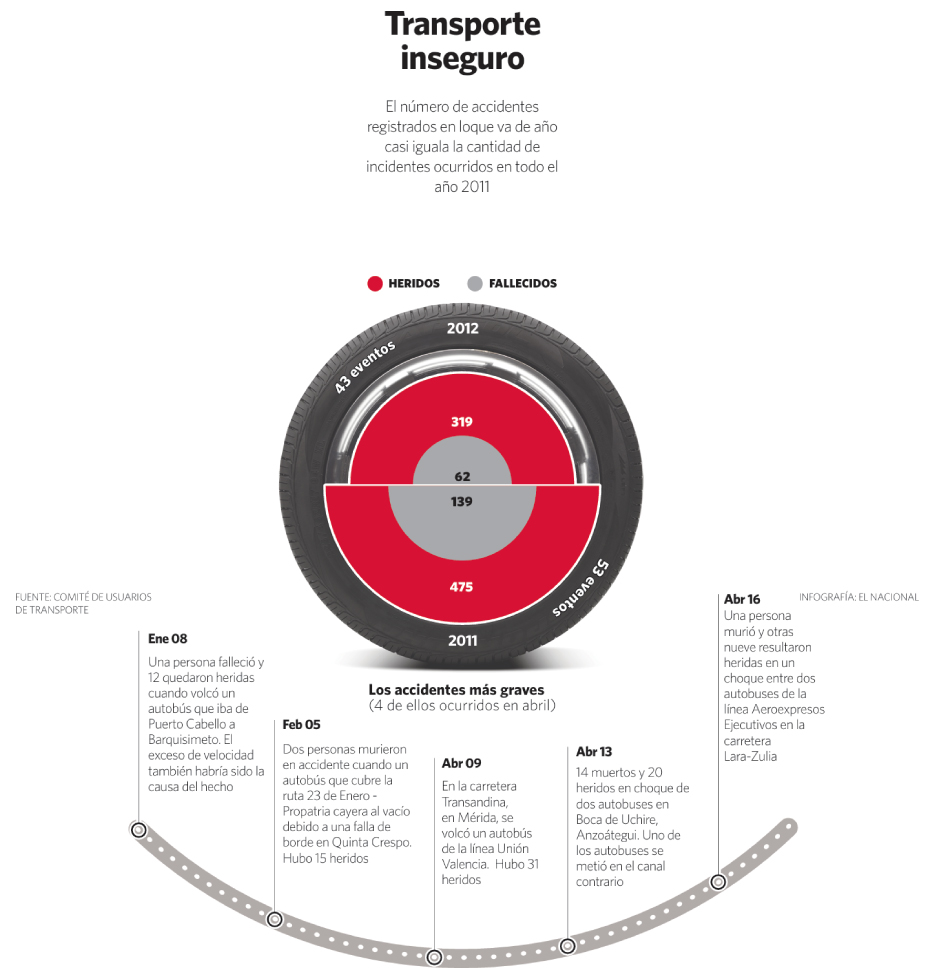

Transporte inseguro
Editorial InfographicContext
This infographic was produced to illustrate the increasing number of public transportation accidents recorded during the year. By mid-April, the number of incidents had already approached the total registered in the previous year.
The goal was to communicate the magnitude of the problem while highlighting the most severe accidents that occurred during the period.
Challenge
The information involved multiple types of data: total incidents, number of injured and fatalities, and a sequence of specific events that occurred throughout the year. The challenge was to present this information in a clear structure that allowed readers to quickly understand both the overall scale and the timeline of accidents.
Design Approach
The central visual element uses a circular structure inspired by a vehicle wheel to represent the accumulation of accidents. Color coding distinguishes injured victims from fatalities, allowing the reader to immediately compare both figures.
Below the main visualization, a curved timeline highlights the most severe accidents, providing context and narrative to the data.
Information Structure
The infographic combines a summary visualization of accident statistics with a chronological timeline of the most critical incidents. This approach allows the reader to understand the overall magnitude of the problem while also seeing the events that shaped the statistic.
